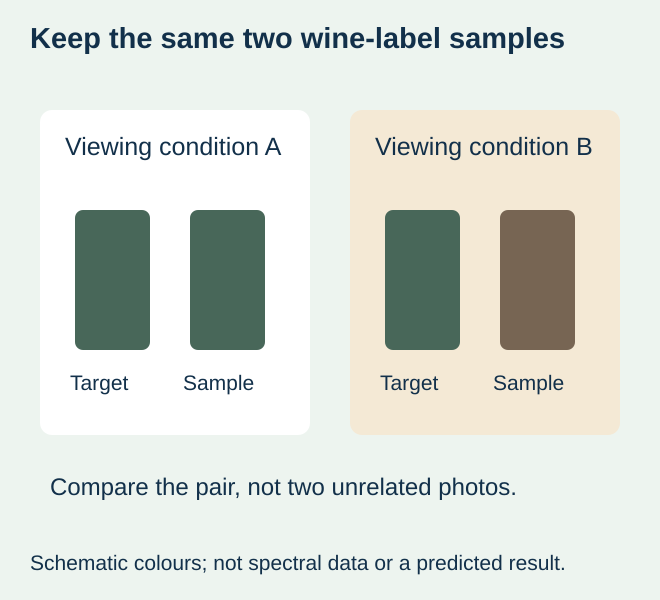
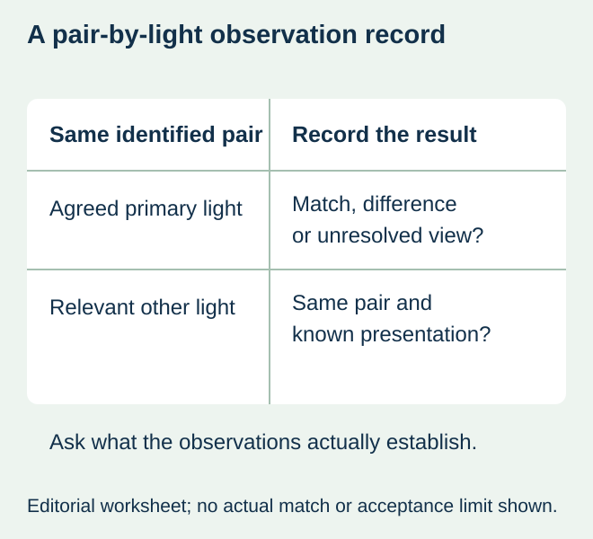

A winery approves a new label beside its retained target in the print room. The pair looks different when it is taken to the intended display. A phone photograph arrives with a request to make the new print warmer. Before changing the file, the buyer needs to establish which two physical samples and which light produced each observation.
Keep the same identified reference-and-sample pair together and compare it under the agreed relevant lights. If the match changes with the light, ask the colour specialist to evaluate that behaviour before an artwork or material adjustment is approved. A correction based on an unidentified photograph can improve one view while leaving the actual purchasing requirement unanswered.


A changing match concerns two samples
HunterLab’s metamerism explanation describes samples that match under some lighting conditions but not others, including products assembled from different materials or sources. The term does not mean that any single object changing appearance in a different room proves a printing defect. Keep the actual pair and the relevant viewing conditions identified.
Keep the target identity, sample identity and construction known. If the retained target is worn, resolve its condition using the colour-reference guide. If the samples change between the two viewing sessions, there is no longer one controlled pair to discuss. An old shelf bottle and a protected master can answer different questions.
Record the observation before choosing a correction
| Observation | Direct next step | What remains unproved |
|---|---|---|
| Same pair matches in the agreed main light but differs in another relevant light | Ask the colour specialist to assess light-dependent mismatch and proposal options | A fixed CMYK correction will solve both views |
| Samples differ already in the main comparison | First investigate that baseline mismatch | The difference is metamerism rather than an ordinary mismatch |
| A highlight or changing angle hides the colour region | Review viewing geometry and finish as well as colour | The colourants alone caused the observation |
| Only phone photographs are available | Obtain identified physical samples and viewing context | The image reproduces either physical colour accurately |


Define the relevant lights without inventing a universal pass rule
Agree the primary viewing arrangement and any additional real display or use conditions that matter to this wine project. A colour specialist can help select suitable controlled viewing and measurement methods. Record the actual light reference or described substitute; a broad phrase such as “shop light” is not a reproducible specification.
Record which pair was observed, whether it was flat or applied, the bottle/background and the relevant finish. Keep the same viewing geometry where the comparison calls for it. A textured, metallic or glossy surface can change the observation with angle, so an apparent mismatch should not automatically be attributed to the ink recipe.
No lamp specification, numerical tolerance or promise to match every possible environment is supplied here. The buyer and printer must agree what the proposed construction can achieve and what evidence supports the accepted appearance. A manufacturer’s colour explanation does not establish this site’s equipment, instrument capability or a particular match result.
Separate a viewing light from an instrument mode
The M0/M1/M2 guide addresses how measurement conditions, including UV treatment, affect the interpretation of reports. A report headed M1 is not itself the record of a shelf-light comparison. Ask for both the relevant measurement context and the physical viewing record when the decision needs them.
Keep screenshots and photographs for context rather than treating them as spectral or contractual acceptance evidence. Camera processing and a viewer’s display add another representation between the actual samples and the decision. Use the physical pair and the agreed specialist method to close the question.
Compare options against the appearance the buyer actually needs
If a relevant light-dependent mismatch remains, ask what alternatives the actual printer can support. A different ink or colourant route, stock or finish may change the result and may require a new sample. Do not promise that changing a process name or switching to a spot colour automatically removes the issue.
For a hypothetical reserve-wine reorder, matching an identified paper target under the agreed primary light may conflict with a desired match beside a differently finished carton in another setting. Make that tradeoff explicit. The brand can then choose a supported target, request another proposal or revise the package combination with the relevant evidence. No consumer preference or sales benefit is inferred from the illustration.
Carry the accepted boundary into the reorder
Retain the actual accepted sample and the agreed comparison conditions with the construction and artwork revision. Record any important additional view that remains outside the acceptance scope. A later stock or colourant change should be reviewed against that reference rather than inherit approval from a file that happens to contain the same colour values.
The useful purchasing result is an explainable appearance decision for a specified wine-label construction. It comes from an identified target, a relevant comparison and a supported proposal, not a universal claim that every light must make every material look identical.
Discuss the unresolved label requirement
Provide the identified physical reference and proposed label, actual stock/print/finish, bottle presentation and the relevant lights under which the match changes. State which appearance matters to the purchasing decision and which comparison remains unresolved. Review the wine-label product scope and prepare a label specification inquiry. The contact page opens an email draft and lists email or WhatsApp for attachments. Supply, proof options, testing, pricing and timing require project confirmation.